<?xml version="1.0" encoding="UTF-8"?>
<rss version="2.0"
	xmlns:content="http://purl.org/rss/1.0/modules/content/"
	xmlns:wfw="http://wellformedweb.org/CommentAPI/"
	xmlns:dc="http://purl.org/dc/elements/1.1/"
	xmlns:atom="http://www.w3.org/2005/Atom"
	xmlns:sy="http://purl.org/rss/1.0/modules/syndication/"
	>

<channel>
	<title>Dart Photographie</title>
	<atom:link href="http://dartphotographie.com/blog/feed/" rel="self" type="application/rss+xml" />
	<link>http://dartphotographie.com/blog</link>
	<description>Blog</description>
	<pubDate>Thu, 12 Aug 2010 17:51:26 +0000</pubDate>
	<generator>http://wordpress.org/?v=2.7.1</generator>
	<language>en</language>
	<sy:updatePeriod>hourly</sy:updatePeriod>
	<sy:updateFrequency>1</sy:updateFrequency>
			<item>
		<title>ELO wool</title>
		<link>http://dartphotographie.com/blog/elo-wool/</link>
		<comments>http://dartphotographie.com/blog/elo-wool/#comments</comments>
		<pubDate>Thu, 12 Aug 2010 17:51:26 +0000</pubDate>
		<dc:creator>lauradart</dc:creator>
		
		<category><![CDATA[Uncategorized]]></category>

		<guid isPermaLink="false">http://dartphotographie.com/blog/?p=292</guid>
		<description><![CDATA[


]]></description>
			<content:encoded><![CDATA[<p></p>
<p></p>
<p></p>
<p></p>
<p></p>
<p></p>
<p></p>
<p></p>
<p></p>
]]></content:encoded>
			<wfw:commentRss>http://dartphotographie.com/blog/elo-wool/feed/</wfw:commentRss>
		</item>
		<item>
		<title>the piacenti family</title>
		<link>http://dartphotographie.com/blog/the-piacenti-family/</link>
		<comments>http://dartphotographie.com/blog/the-piacenti-family/#comments</comments>
		<pubDate>Sun, 16 Aug 2009 23:16:35 +0000</pubDate>
		<dc:creator>admin</dc:creator>
		
		<category><![CDATA[family]]></category>

		<guid isPermaLink="false">http://dartphotographie.com/blog/?p=166</guid>
		<description><![CDATA[Chicago Summer: sometime before sunset. chimerical scenes shaded in hues adjacent to this night. as the sidewalk cracks form crescent moons in the cement before me, I capture the senses of something new: this is a family I will never forget.


]]></description>
			<content:encoded><![CDATA[<p style="text-align: center;">Chicago Summer: sometime before sunset. chimerical scenes shaded in hues adjacent to this night. as the sidewalk cracks form crescent moons in the cement before me, I capture the senses of something new: this is a family I will never forget.</p>
<p style="text-align: center;"><a href="http://s276.photobucket.com/albums/kk4/dartphoto/?action=view&current=PIACENTI_03.jpg" target="_blank">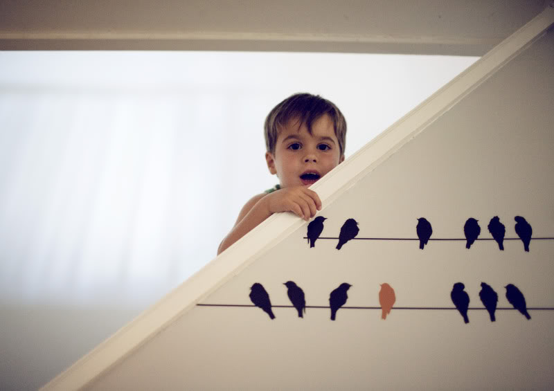</a><a href="http://s276.photobucket.com/albums/kk4/dartphoto/?action=view&current=PIACENTI_38.jpg" target="_blank"></a><a href="http://s276.photobucket.com/albums/kk4/dartphoto/?action=view&current=PIACENTI_42.jpg" target="_blank"></a><a href="http://s276.photobucket.com/albums/kk4/dartphoto/?action=view&current=PIACENTI_27.jpg" target="_blank"></a><a href="http://s276.photobucket.com/albums/kk4/dartphoto/?action=view&current=PIACENTI_24.jpg" target="_blank"></a><a href="http://s276.photobucket.com/albums/kk4/dartphoto/?action=view&current=PIACENTI.jpg" target="_blank"></a><a href="http://s276.photobucket.com/albums/kk4/dartphoto/?action=view&current=PIACENTI_34.jpg" target="_blank"></a><a href="http://s276.photobucket.com/albums/kk4/dartphoto/?action=view&current=PIACENTI_62.jpg" target="_blank"></a><a href="http://s276.photobucket.com/albums/kk4/dartphoto/?action=view&current=PIACENTI_60.jpg" target="_blank"></a><a href="http://s276.photobucket.com/albums/kk4/dartphoto/?action=view&current=PIACENTI_50.jpg" target="_blank"></a><a href="http://s276.photobucket.com/albums/kk4/dartphoto/?action=view&current=PIACENTI_94.jpg" target="_blank"></a><a href="http://s276.photobucket.com/albums/kk4/dartphoto/?action=view&current=PIACENTI_80.jpg" target="_blank"></a><a href="http://s276.photobucket.com/albums/kk4/dartphoto/?action=view&current=PIACENTI_78.jpg" target="_blank"></a><a href="http://s276.photobucket.com/albums/kk4/dartphoto/?action=view&current=PIACENTI_72.jpg" target="_blank"></a><a href="http://s276.photobucket.com/albums/kk4/dartphoto/?action=view&current=PIACENTI_051.jpg" target="_blank"></a><a href="http://s276.photobucket.com/albums/kk4/dartphoto/?action=view&current=PIACENTI_041.jpg" target="_blank"></a><br />
<a href="http://s276.photobucket.com/albums/kk4/dartphoto/?action=view&current=PIACENTI_97.jpg" target="_blank"></a><br />
<a href="http://s276.photobucket.com/albums/kk4/dartphoto/?action=view&current=PIACENTI_031.jpg" target="_blank"></a><a href="http://s276.photobucket.com/albums/kk4/dartphoto/?action=view&current=PIACENTI_02.jpg" target="_blank"></a><a href="http://s276.photobucket.com/albums/kk4/dartphoto/?action=view&current=PIACENTI_10.jpg" target="_blank"></a></p>
]]></content:encoded>
			<wfw:commentRss>http://dartphotographie.com/blog/the-piacenti-family/feed/</wfw:commentRss>
		</item>
		<item>
		<title>the dabbs</title>
		<link>http://dartphotographie.com/blog/the-dabbs/</link>
		<comments>http://dartphotographie.com/blog/the-dabbs/#comments</comments>
		<pubDate>Thu, 13 Aug 2009 19:07:47 +0000</pubDate>
		<dc:creator>admin</dc:creator>
		
		<category><![CDATA[Uncategorized]]></category>

		<guid isPermaLink="false">http://dartphotographie.com/blog/?p=154</guid>
		<description><![CDATA[Nashville Summer: afternoon spent with this lovely family, capturing the details of their aesthetic amidst antiques. so much inspiration and love within these scenes. 

]]></description>
			<content:encoded><![CDATA[<p style="text-align: center;">Nashville Summer: afternoon spent with this lovely family, capturing the details of their aesthetic amidst antiques. so much inspiration and love within these scenes. <a href="http://s276.photobucket.com/albums/kk4/dartphoto/?action=view&current=DABBS24.jpg" target="_blank"></a><a href="http://s276.photobucket.com/albums/kk4/dartphoto/?action=view&current=DABBS22.jpg" target="_blank"></a><a href="http://s276.photobucket.com/albums/kk4/dartphoto/?action=view&current=DABBS27.jpg" target="_blank"></a><a href="http://s276.photobucket.com/albums/kk4/dartphoto/?action=view&current=DABBS11.jpg" target="_blank"></a><a href="http://s276.photobucket.com/albums/kk4/dartphoto/?action=view&current=DABBS07.jpg" target="_blank"></a><a href="http://s276.photobucket.com/albums/kk4/dartphoto/?action=view&current=DABBS59.jpg" target="_blank"></a><br />
<a href="http://s276.photobucket.com/albums/kk4/dartphoto/?action=view&current=DABBS47.jpg" target="_blank"></a><a href="http://s276.photobucket.com/albums/kk4/dartphoto/?action=view&current=DABBS49.jpg" target="_blank"></a><a href="http://s276.photobucket.com/albums/kk4/dartphoto/?action=view&current=DABBS40.jpg" target="_blank"></a><a href="http://s276.photobucket.com/albums/kk4/dartphoto/?action=view&current=DABBS50.jpg" target="_blank"></a><a href="http://s276.photobucket.com/albums/kk4/dartphoto/?action=view&current=DABBS63.jpg" target="_blank"></a><a href="http://s276.photobucket.com/albums/kk4/dartphoto/?action=view&current=DABBS12.jpg" target="_blank"></a><a href="http://s276.photobucket.com/albums/kk4/dartphoto/?action=view&current=DABBS67.jpg" target="_blank"></a><a href="http://s276.photobucket.com/albums/kk4/dartphoto/?action=view&current=DABBS02.jpg" target="_blank"></a><a href="http://s276.photobucket.com/albums/kk4/dartphoto/?action=view&current=DABBS05.jpg" target="_blank"></a><a href="http://s276.photobucket.com/albums/kk4/dartphoto/?action=view&current=DABBS70.jpg" target="_blank"></a><a href="http://s276.photobucket.com/albums/kk4/dartphoto/?action=view&current=DABBS06.jpg" target="_blank"></a><a href="http://s276.photobucket.com/albums/kk4/dartphoto/?action=view&current=DABBS93.jpg" target="_blank"></a><a href="http://s276.photobucket.com/albums/kk4/dartphoto/?action=view&current=DABBS88.jpg" target="_blank"></a></p>
]]></content:encoded>
			<wfw:commentRss>http://dartphotographie.com/blog/the-dabbs/feed/</wfw:commentRss>
		</item>
		<item>
		<title>katie</title>
		<link>http://dartphotographie.com/blog/katie/</link>
		<comments>http://dartphotographie.com/blog/katie/#comments</comments>
		<pubDate>Mon, 29 Jun 2009 20:14:09 +0000</pubDate>
		<dc:creator>admin</dc:creator>
		
		<category><![CDATA[Uncategorized]]></category>

		<guid isPermaLink="false">http://dartphotographie.com/blog/?p=105</guid>
		<description><![CDATA[I love L.A.! One of the many reasons being Katie Labarge. Just hours after arriving in the city, I met Katie and immediately felt embraced as an artist. Katie has been doing interior design for the past eight years, before opening her own showroom in west Hollywood last September. Marge Carson, a highend furniture showroom [...]]]></description>
			<content:encoded><![CDATA[<p style="text-align: center;">I love L.A.! One of the many reasons being Katie Labarge. Just hours after arriving in the city, I met Katie and immediately felt embraced as an artist. Katie has been doing interior design for the past eight years, before opening her own showroom in west Hollywood last September. Marge Carson, a highend furniture showroom in the center of the design district in L.A., is where you will find her creative genius. Not only is Katie incredible at what she does, she embodies an effortless beauty that begs to be photographed. Lucky for me, she let me!<a href="http://s276.photobucket.com/albums/kk4/dartphoto/?action=view&current=IMG_9645.jpg" target="_blank"></a><a href="http://s276.photobucket.com/albums/kk4/dartphoto/?action=view&current=IMG_9681.jpg" target="_blank"></a><br />
<a href="http://s276.photobucket.com/albums/kk4/dartphoto/?action=view&current=IMG_9538.jpg" target="_blank"></a><a href="http://s276.photobucket.com/albums/kk4/dartphoto/?action=view&current=IMG_0001.jpg" target="_blank"></a><a href="http://s276.photobucket.com/albums/kk4/dartphoto/?action=view&current=IMG_0113-1.jpg" target="_blank"></a><a href="http://s276.photobucket.com/albums/kk4/dartphoto/?action=view&current=IMG_9642.jpg" target="_blank"></a><a href="http://s276.photobucket.com/albums/kk4/dartphoto/?action=view&current=IMG_9791.jpg" target="_blank"></a><a href="http://s276.photobucket.com/albums/kk4/dartphoto/?action=view&current=IMG_9895.jpg" target="_blank"></a></p>
]]></content:encoded>
			<wfw:commentRss>http://dartphotographie.com/blog/katie/feed/</wfw:commentRss>
		</item>
		<item>
		<title>sarah</title>
		<link>http://dartphotographie.com/blog/sarah/</link>
		<comments>http://dartphotographie.com/blog/sarah/#comments</comments>
		<pubDate>Wed, 17 Jun 2009 15:43:35 +0000</pubDate>
		<dc:creator>admin</dc:creator>
		
		<category><![CDATA[Uncategorized]]></category>

		<guid isPermaLink="false">http://dartphotographie.com/blog/?p=96</guid>
		<description><![CDATA[I am a little behind on posting due to the craziness of the past few months. However, I have so many new images of  lovely people and places that I do not want to go undocumented. So, there will be several new posts this month to bring d&#8217;art photographie up to the present tense. [...]]]></description>
			<content:encoded><![CDATA[<p style="text-align: center;">I am a little behind on posting due to the craziness of the past few months. However, I have so many new images of  lovely people and places that I do not want to go undocumented. So, there will be several new posts this month to bring d&#8217;art photographie up to the present tense. I was able to visit my wonderful cousin last month in L.A. She is an interior designer, entrepreneur, and the best California tour guide a photographer could want. I had the most amazing time discovering and creating with her and hope to work with her again in the near future!<a href="http://s276.photobucket.com/albums/kk4/dartphoto/?action=view&current=IMG_0415.jpg" target="_blank"></a><a href="http://s276.photobucket.com/albums/kk4/dartphoto/?action=view&current=IMG_0405.jpg" target="_blank">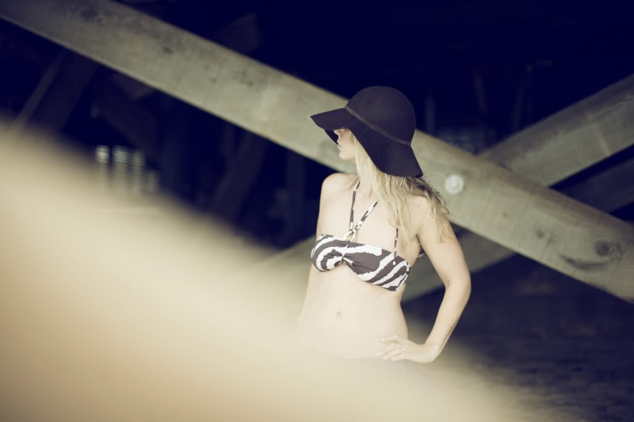</a><a href="http://s276.photobucket.com/albums/kk4/dartphoto/?action=view&current=IMG_0026.jpg" target="_blank">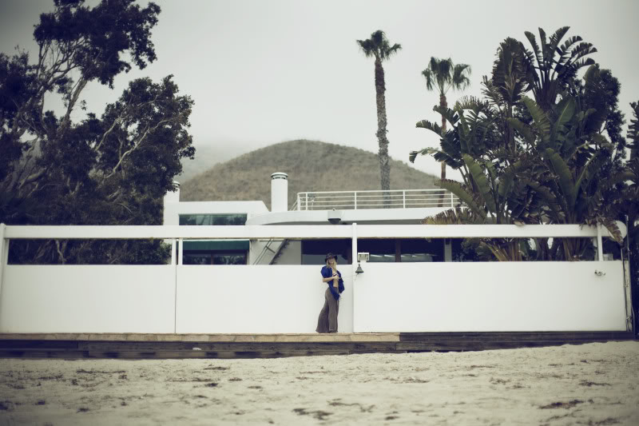</a><a href="http://s276.photobucket.com/albums/kk4/dartphoto/?action=view&current=IMG_0560.jpg" target="_blank"></a><a href="http://s276.photobucket.com/albums/kk4/dartphoto/?action=view&current=IMG_0598.jpg" target="_blank"></a><a href="http://s276.photobucket.com/albums/kk4/dartphoto/?action=view&current=IMG_0611.jpg" target="_blank"></a><a href="http://s276.photobucket.com/albums/kk4/dartphoto/?action=view&current=IMG_0624.jpg" target="_blank"></a></p>
]]></content:encoded>
			<wfw:commentRss>http://dartphotographie.com/blog/sarah/feed/</wfw:commentRss>
		</item>
		<item>
		<title>these are the days that must happen to you:</title>
		<link>http://dartphotographie.com/blog/these-are-the-days-that-must-happen-to-you/</link>
		<comments>http://dartphotographie.com/blog/these-are-the-days-that-must-happen-to-you/#comments</comments>
		<pubDate>Mon, 15 Jun 2009 01:41:48 +0000</pubDate>
		<dc:creator>admin</dc:creator>
		
		<category><![CDATA[la vie]]></category>

		<guid isPermaLink="false">http://dartphotographie.com/blog/?p=93</guid>
		<description><![CDATA[March 28, 2008: the day I knew I wanted to pursue the medium of photography wholeheartedly. It had actually been years in the dreaming, as I began to think back to the various times I had tried and failed to make this medium mine. However, it was never a sacrificial state of mind. This new [...]]]></description>
			<content:encoded><![CDATA[<p style="text-align: center;">March 28, 2008: the day I knew I wanted to pursue the medium of photography wholeheartedly. It had actually been years in the dreaming, as I began to think back to the various times I had tried and failed to make this medium mine. However, it was never a sacrificial state of mind. This new consciousness allowed me to find balance in my blurred vision of idealism/realism, juxtaposing the two states in a single image. The progression has been one of total dedication to the art form I adore more intensely, daily. It is about living passionately, presently.        This is where my images are formed, in the dreamlike state of reality.<a href="http://s276.photobucket.com/albums/kk4/dartphoto/?action=view&current=H12.jpg" target="_blank"></a><br />
<a href="http://s276.photobucket.com/albums/kk4/dartphoto/?action=view&current=IMG_5320-1.jpg" target="_blank"></a><a href="http://s276.photobucket.com/albums/kk4/dartphoto/?action=view&current=IMG_5769-1.jpg" target="_blank"></a><a href="http://s276.photobucket.com/albums/kk4/dartphoto/?action=view&current=IMG_0278.jpg" target="_blank"></a><a href="http://s276.photobucket.com/albums/kk4/dartphoto/?action=view&current=IMG_2118-1.jpg" target="_blank"></a><a href="http://s276.photobucket.com/albums/kk4/dartphoto/?action=view&current=IMG_6063.jpg" target="_blank"></a><a href="http://s276.photobucket.com/albums/kk4/dartphoto/?action=view&current=IMG_6015.jpg" target="_blank"></a><a href="http://s276.photobucket.com/albums/kk4/dartphoto/?action=view&current=IMG_6094.jpg" target="_blank"></a><a href="http://s276.photobucket.com/albums/kk4/dartphoto/?action=view&current=IMG_1083.jpg" target="_blank"></a><a href="http://s276.photobucket.com/albums/kk4/dartphoto/?action=view&current=IMG_1899.jpg" target="_blank"></a><a href="http://s276.photobucket.com/albums/kk4/dartphoto/?action=view&current=IMG_2639.jpg" target="_blank"></a></a><a href="http://s276.photobucket.com/albums/kk4/dartphoto/?action=view&current=IMG_1899.jpg" target="_blank"><a href="http://s276.photobucket.com/albums/kk4/dartphoto/?action=view&current=IMG_9000c-4.jpg" target="_blank"></a><br />
Thank You to all of the wonderful artists who contributed to this years successes. I have been overwhelmingly inspired by your passion and purposeful creation of beauty. I look forward to many more collaborations!</p>
<p style="text-align: center;">laura d&#8217;art</p>
]]></content:encoded>
			<wfw:commentRss>http://dartphotographie.com/blog/these-are-the-days-that-must-happen-to-you/feed/</wfw:commentRss>
		</item>
		<item>
		<title>Griffin House</title>
		<link>http://dartphotographie.com/blog/griffin-house/</link>
		<comments>http://dartphotographie.com/blog/griffin-house/#comments</comments>
		<pubDate>Wed, 08 Apr 2009 02:02:00 +0000</pubDate>
		<dc:creator>admin</dc:creator>
		
		<category><![CDATA[music]]></category>

		<guid isPermaLink="false">http://dartphotographie.com/blog/griffin-house/</guid>
		<description><![CDATA[HELLO 

]]></description>
			<content:encoded><![CDATA[<p>HELLO </p>
<p>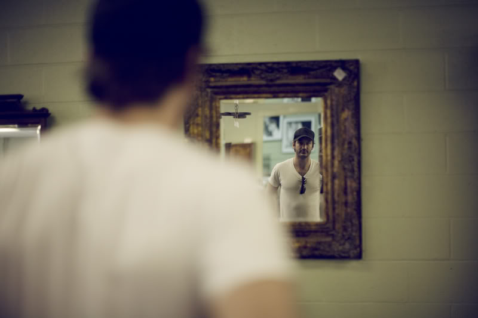<br /><br />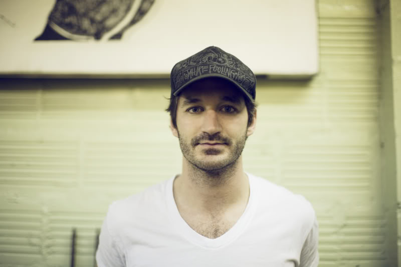<br /><br /></p>
]]></content:encoded>
			<wfw:commentRss>http://dartphotographie.com/blog/griffin-house/feed/</wfw:commentRss>
		</item>
		<item>
		<title>Emily Deloach</title>
		<link>http://dartphotographie.com/blog/emily-deloach/</link>
		<comments>http://dartphotographie.com/blog/emily-deloach/#comments</comments>
		<pubDate>Sun, 29 Mar 2009 02:08:00 +0000</pubDate>
		<dc:creator>admin</dc:creator>
		
		<category><![CDATA[music]]></category>

		<guid isPermaLink="false">http://dartphotographie.com/blog/emily-deloach/</guid>
		<description><![CDATA[LISTEN
]]></description>
			<content:encoded><![CDATA[<p><br /><br />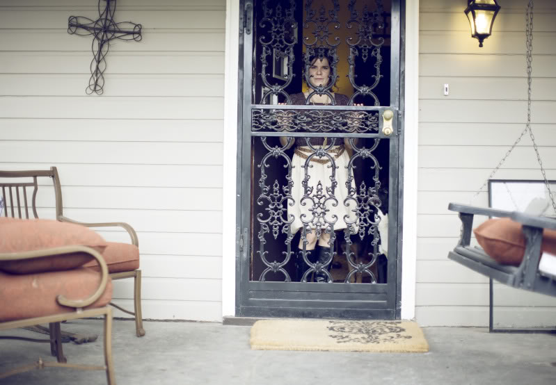<br /><br />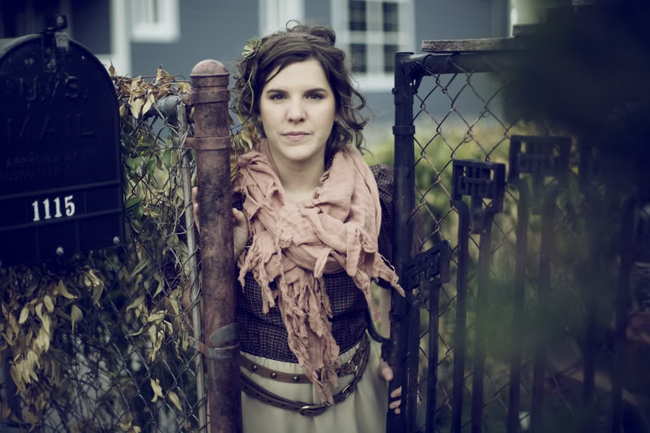<br /><br /><br /><br /><br /><br /><br /><br /><a href="http://www.briterevolution.com/artists/emily-deloach/">LISTEN</a></p>
]]></content:encoded>
			<wfw:commentRss>http://dartphotographie.com/blog/emily-deloach/feed/</wfw:commentRss>
		</item>
		<item>
		<title>Matthew Perryman Jones</title>
		<link>http://dartphotographie.com/blog/matthew-perryman-jones/</link>
		<comments>http://dartphotographie.com/blog/matthew-perryman-jones/#comments</comments>
		<pubDate>Sun, 29 Mar 2009 01:14:00 +0000</pubDate>
		<dc:creator>admin</dc:creator>
		
		<category><![CDATA[music]]></category>

		<guid isPermaLink="false">http://dartphotographie.com/blog/matthew-perryman-jones/</guid>
		<description><![CDATA[LISTEN
]]></description>
			<content:encoded><![CDATA[<p><br /><br /><br />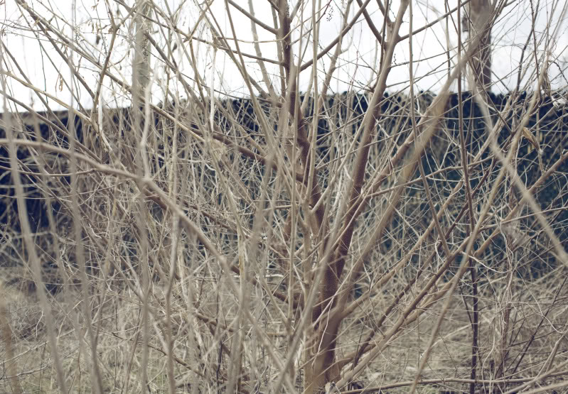<br /><br />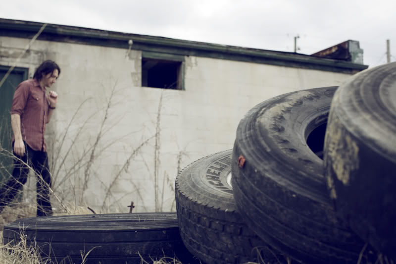<br />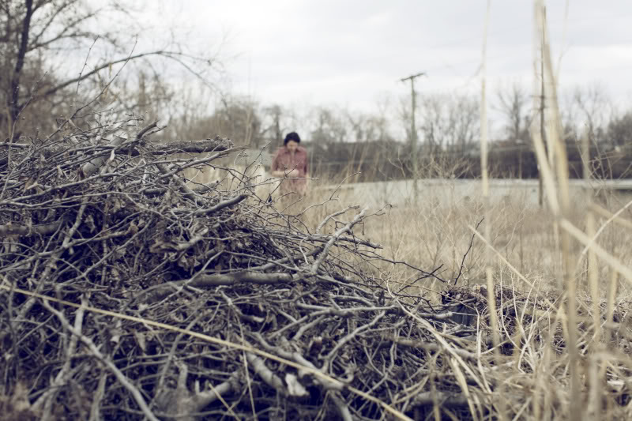<br />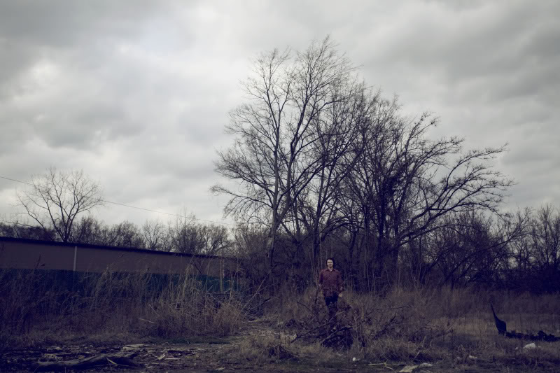<br /><a href="http://www.briterevolution.com/artists/matthew-perryman-jones/">LISTEN</a></p>
]]></content:encoded>
			<wfw:commentRss>http://dartphotographie.com/blog/matthew-perryman-jones/feed/</wfw:commentRss>
		</item>
		<item>
		<title>katie herzig</title>
		<link>http://dartphotographie.com/blog/katie-herzig/</link>
		<comments>http://dartphotographie.com/blog/katie-herzig/#comments</comments>
		<pubDate>Thu, 26 Mar 2009 17:21:00 +0000</pubDate>
		<dc:creator>admin</dc:creator>
		
		<category><![CDATA[music]]></category>

		<guid isPermaLink="false">http://dartphotographie.com/blog/katie-herzig/</guid>
		<description><![CDATA[
LISTEN
]]></description>
			<content:encoded><![CDATA[<p><br /><br />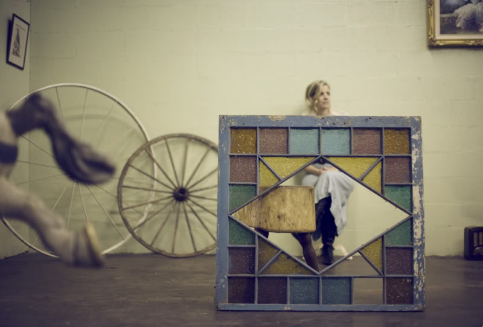<br />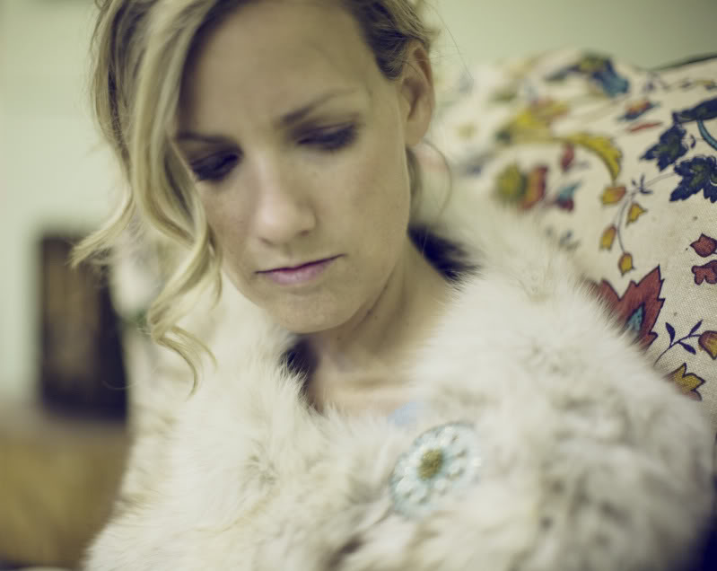<br /><br /><br />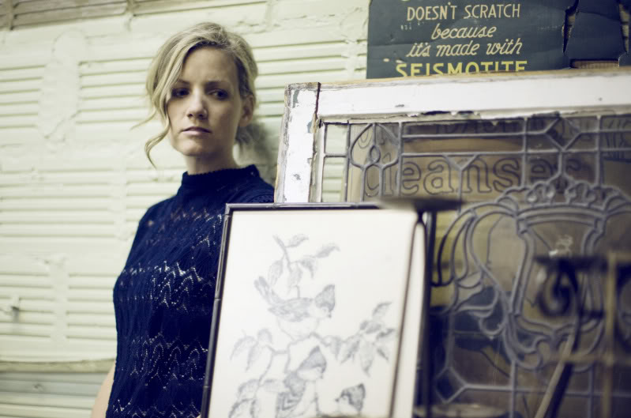</p>
<p><a href="http://www.briterevolution.com/artists/katie-herzig/">LISTEN</a></p>
]]></content:encoded>
			<wfw:commentRss>http://dartphotographie.com/blog/katie-herzig/feed/</wfw:commentRss>
		</item>
	</channel>
</rss>

<!-- Localized -->